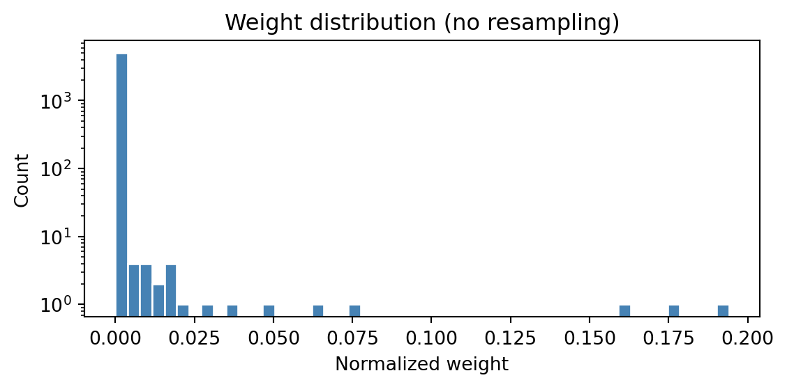
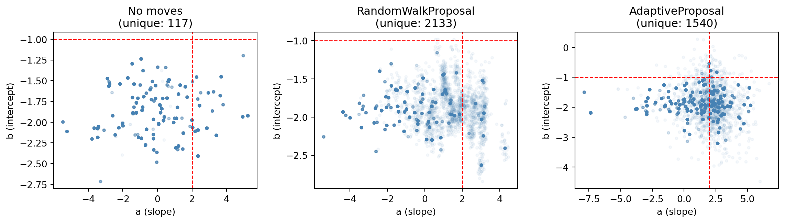
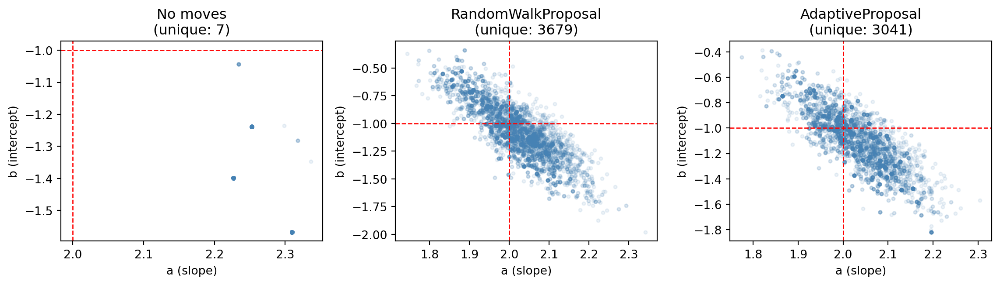

import torch
import torch.distributions as dist
from weighted_sampling import (
model,
sample,
observe,
deterministic,
summary,
expectation,
)
torch.manual_seed(42) # for reproducibilityWeightedSampling.torch
WeightedSampling.torch is a small probabilistic programming library that automates the weighted sampling ideas from the conditioning chapter. It provides a concise syntax for building probabilistic models and performing inference, hiding the bookkeeping behind a few key primitives.
The library can be installed via pip:
pip install git+https://github.com/MariusFurter/WeightedSampling.torch.gitYou will need to import the main primitives to use the library:
Warning
This package is in early development. Make sure you are using the most recent version. If you encounter any bugs, please file an issue on the GitHub issue tracker.
A typical workflow involves writing a model from sample and observe primitives, running it to produce a collection of weighted particles (random samples, each carrying a weight), and using these to estimate quantities of interest. We introduce the library through progressively richer examples, then cover more advanced features in later sections.
NoteWhat does SMC stand for?
SMC stands for Sequential Monte Carlo, a general family of particle-based inference algorithms. It includes importance sampling (a single weighting step) and sequential importance sampling (multiple weighting steps with resampling) as special cases. The library uses “SMC” as a catch-all name for the engine, even for simple models where basic importance sampling would suffice.
Writing models
A probabilistic model is an ordinary Python function that builds a joint distribution step by step. Two primitives do the work:
sample(name, distribution)— draws a value fromdistribution, records it undername, and returns the sampled tensor.observe(value, distribution)— conditions on the observedvalueby evaluating the log-density ofdistributionatvalueand adding it to the running log-weight.
NoteTorch compatibility
Because the engine runs all \(N\) particles simultaneously via PyTorch broadcasting, any computation on sampled values must use torch-compatible operations. Specifically:
- Use
torchfunctions instead of Python / NumPy equivalents (e.g.torch.exp(x)notmath.exp(x)). - Use
torch.where(cond, a, b)instead of Pythonif/elseon tensor values. - Comparison operators (
>,==, etc.) on tensors return boolean tensors — call.float()before arithmetic.
This requirement only applies to code that operates on the sampled tensors. Ordinary Python logic — loops, list operations, data loading — works as usual.
A first example: noisy measurement
Consider estimating an unknown quantity \(\mu\) from a noisy measurement \(x\). We place a prior on \(\mu\) and model the measurement as \(\mu\) plus Gaussian noise:
@model
def measurement():
mu = sample("mu", dist.Normal(0.0, 5.0))
x = sample("x", dist.Normal(mu, 0.5))Here mu is drawn from \(\mathsf{Normal}(0, 25)\), then x is drawn from \(\mathsf{Normal}(\mu, 0.25)\). The two variables are dependent because x depends on the sampled value of mu.
The @model decorator makes the function callable with inference parameters (see Inference parameters). We run it by specifying the number of particles:
result = measurement(num_particles=5000)
print(result)SMCResult(num_particles=5000, log_evidence=0.0000, ESS=5000.0)
Variables: mu, x
mu: shape=(5000,)
x: shape=(5000,)The returned result is a dictionary-like object containing the sampled tensors and metadata — we describe its structure below. The summary function gives us a histogram, the weighted mean, standard deviation, and number of unique particles for each variable.
print(summary(result))SMC Summary (N=5000, log_evidence=0.0000, ESS=5000.0)
│ ▁▂▃▇██▆▄▂ │ ▁▂▄▇██▆▄▂ │
│ mu │ x │
──────────┼────────────────┼────────────────┤
mean │ 0.0347 │ 0.0321 │
std │ 4.9271 │ 4.9611 │
n_unique │ 5000 │ 5000 │Conditioning with observe
Now suppose we observe that the measurement takes value \(x = 3.2\). We replace the second sample with an observe:
@model
def conditioned_measurement():
mu = sample("mu", dist.Normal(0.0, 5.0))
observe(3.2, dist.Normal(mu, 0.5))
result = conditioned_measurement(num_particles=5000)
print(f"E[mu] = {summary(result)['mu']['mean']:.3f}")E[mu] = 3.169The observe call evaluates the Gaussian density \(\ell(3.2 \mid \mu)\) for each particle’s sampled mu and uses the result as a weight. Particles whose mu is close to \(3.2\) receive high weight; those far away receive low weight. This is precisely the density-based conditioning from the conditioning chapter.
Named sites and intermediate variables
Only named sites — created by sample or deterministic — are recorded in the result object. Any other computation inside the model is an intermediate variable that is not stored. For example, if we write y = mu + 1 inside the model, y is computed but not recorded.
The deterministic(name, value) primitive records a computed (non-random) value under name and returns it unchanged. Like sample, the return value can be captured for use later in the model:
@model
def measurement_with_derived():
mu = sample("mu", dist.Normal(0.0, 5.0))
prediction = deterministic("prediction", mu + 1.0) # recorded & returned
observe(3.2, dist.Normal(prediction, 0.5))
result = measurement_with_derived(num_particles=5000)
print(result["prediction"].shape) # recorded in the result
print(summary(result))torch.Size([5000])
SMC Summary (N=5000, log_evidence=-2.6223, ESS=647.7)
│ █ │ █ │
│ mu │ prediction │
──────────┼────────────────┼────────────────┤
mean │ 2.1497 │ 3.1497 │
std │ 0.5004 │ 0.5004 │
n_unique │ 4999 │ 4999 │This is useful when a model computes a derived quantity that is both needed later in the model (e.g. as the mean of an observe) and worth inspecting in the result. However, when a derived quantity is only needed after inference, it is often simpler to compute it from the sampled variables directly rather than storing it inside the model.
The @model decorator
The @model decorator connects the function to the inference engine (see Behind the scenes). Writing
@model
def my_model():
...
result = my_model(num_particles=1000)is equivalent to calling the engine directly:
from weighted_sampling import run_smc
def my_model():
...
result = run_smc(my_model, num_particles=1000)Model arguments
Model functions can accept arbitrary arguments — data, hyperparameters, configuration — which are passed through to the underlying function. Inference parameters (num_particles, ess_threshold, etc.) are intercepted by the decorator and never reach the model body:
@model
def flexible_measurement(observed_value, prior_std=5.0):
mu = sample("mu", dist.Normal(0.0, prior_std))
observe(observed_value, dist.Normal(mu, 0.5))
# 'observed_value' and 'prior_std' go to the model; 'num_particles' goes to the engine
result = flexible_measurement(3.2, prior_std=2.0, num_particles=5000)
print(f"E[mu] = {summary(result)['mu']['mean']:.3f}")E[mu] = 2.995
Warning
Avoid naming model parameters num_particles, ess_threshold, track_joint, progress_bar, validate, or debug — these names are reserved for the inference engine. If passed as keyword arguments, the decorator will intercept them silently.
Inference parameters
The key parameters controlling inference are:
| Parameter | Default | Description |
|---|---|---|
num_particles |
1000 | Number of particles \(N\). More particles = better estimates but more computation. |
ess_threshold |
0.5 | Fraction of \(N\) below which resampling triggers (see Resampling). Set to \(0\) to disable. |
For models that take a long time to run, you can also enable a progress bar by passing progress_bar=True.
The result object
Calling a decorated model runs the inference engine and returns a result object (of type SMCResult). This is a dictionary-like object where each sample call produces a tensor of shape \((N, \ldots)\):
result = measurement(num_particles=5000)
print(result)SMCResult(num_particles=5000, log_evidence=0.0000, ESS=5000.0)
Variables: mu, x
mu: shape=(5000,)
x: shape=(5000,)Three metadata entries are always present:
result.log_weights— log-weights accumulated fromobservecalls, shape \((N,)\).result.norm_weights— normalized weights (i.e.softmaxoflog_weights), shape \((N,)\). These sum to \(1\) and are convenient for computing weighted averages or plotting.result.log_evidence— estimate of \(\log p(\text{observations})\), useful for model comparison.
You can access each variable with result["var_name"] or result.var_name.
result["x"]
result.xtensor([ 5.2938, -0.4008, -4.4538, ..., 3.8232, 2.2977, 2.2212])summary: quick posterior overview
The summary function computes weighted mean, standard deviation, and the number of unique particles for each variable. It is also available as a method on the result object: result.summary(). Printing the summary gives an overview including a histogram for each variable:
result = conditioned_measurement(num_particles=5000)
stats = summary(result)
print(stats)SMC Summary (N=5000, log_evidence=-2.7376, ESS=579.8)
│ █▁ │
│ mu │
──────────┼────────────────┤
mean │ 3.1706 │
std │ 0.5058 │
n_unique │ 5000 │You can also extract specific statistics for a variable:
print(f"E[mu | x=3.2] = {stats['mu']['mean']:.3f} ± {stats['mu']['std']:.3f}")
print(f"Unique particles: {stats['mu']['n_unique']}")E[mu | x=3.2] = 3.171 ± 0.506
Unique particles: 5000Example: Bayesian linear regression
As a more realistic example, consider inferring the slope \(a\) and intercept \(b\) of a line from noisy data. We place informative priors and assume known noise:
@model
def bayesian_linreg(data):
a = sample("a", dist.Normal(0.0, 2.0)) # prior on slope
b = sample("b", dist.Normal(0.0, 2.0)) # prior on intercept
for x, y in data:
observe(y, dist.Normal(a * x + b, 0.2))We generate synthetic data from a known ground truth and run inference:
true_a, true_b = 2.0, -1.0
xs = torch.linspace(0, 5, 5)
ys = true_a * xs + true_b + 0.2 * torch.randn(5)
data = list(zip(xs, ys))
result = bayesian_linreg(data, num_particles=10_000)
print(summary(result))SMC Summary (N=10000, log_evidence=-12.6592, ESS=5908.3)
│ █ │ █ │
│ a │ b │
──────────┼────────────────┼────────────────┤
mean │ 2.0247 │ -1.1471 │
std │ 0.0035 │ 0.0032 │
n_unique │ 8 │ 8 │The posterior means are close to the true values. We will revisit this example in Behind the scenes to examine how the inference engine handles the five observations internally.
Composing models
Models can call other functions that use sample and observe. This is the primary way to build modular models. However, only the outermost function should carry the @model decorator. For example, we can rewrite bayesian_linreg by extracting the prior sampling into a helper:
def sample_parameters():
"""Sample the regression parameters from their priors."""
a = sample("a", dist.Normal(0.0, 2.0))
b = sample("b", dist.Normal(0.0, 2.0))
return a, b
@model
def bayesian_linreg_v2(data):
a, b = sample_parameters()
for x, y in data:
observe(y, dist.Normal(a * x + b, 0.2))The undecorated sample_parameters shares the calling model’s context, so its sample calls are recorded alongside those of the outer model.
Evaluating results
Computing expectations
The expectation function computes \(\mathbb{E}[t(X)]\) for an arbitrary test function \(t\). The function’s argument names are matched against the variable names in the result. Like summary, it is also available as a method: result.expectation(f). The standalone function is a wrapper around this method.
result = measurement(num_particles=5000)
E_mu = expectation(result, lambda mu: mu)
E_mu2 = expectation(result, lambda mu: mu**2)
var_mu = E_mu2 - E_mu**2
print(f"E[mu] = {E_mu.item():.3f}")
print(f"Var[mu] = {var_mu.item():.3f}")E[mu] = -0.018
Var[mu] = 25.716Joint quantities Since each particle carries values for all variables, we can estimate expectations of functions of several variables, such as covariances:
E_mu = expectation(result, lambda mu: mu)
E_x = expectation(result, lambda x: x)
cov = expectation(result, lambda mu, x: (mu - E_mu) * (x - E_x))
print(f"Cov[mu, x] = {cov.item():.3f}")Cov[mu, x] = 25.678Computing probabilities To estimate probabilities, use an indicator function.
p_pos = expectation(result, lambda mu: mu > 0)
print(f"P(mu > 0) = {p_pos.item():.3f}")P(mu > 0) = 0.501The anonymous function notation is optional. You can also define a named function and pass it to expectation, as long as the argument names match the variable names in the result:
def indicator(mu):
return mu > 0
p_pos = expectation(result, indicator)
print(f"P(mu > 0) = {p_pos.item():.3f}")P(mu > 0) = 0.501Resampling with .sample()
Often, it is necessary to work with unweighted samples. In such cases, you can sample directly from the weighted set by calling the .sample() method on the result:
result = conditioned_measurement(num_particles=5000)
resampled = result.sample(1000) # draw 1000 equally-weighted samplesThe method draws indices proportional to the importance weights (with replacement), returning a plain dictionary of tensors. If num_samples is omitted, it defaults to the number of particles in the original result:
resampled_all = result.sample() # same as result.sample(5000)
print(resampled_all["mu"].shape)torch.Size([5000])This is especially useful for passing posterior samples to external tools that expect unweighted data, such as plotting libraries.
Visualizing the posterior
We can visualize the posterior distribution by resampling the particles and plotting the results with low opacity:
Code
import matplotlib.pyplot as plt
result = bayesian_linreg(data, num_particles=10_000, ess_threshold=0)
log_w = result.log_weights
weights = result.norm_weights
fig, axes = plt.subplots(1, 2, figsize=(6, 3))
# Left: posterior regression lines (resampled)
ax = axes[0]
alpha = weights
resampled = result.sample()
for i in range(200):
ax.plot(
xs,
(resampled["a"][i] * xs + resampled["b"][i]).numpy(),
color="steelblue",
alpha=0.1,
)
ax.plot(xs, true_a * xs + true_b, color="red", linewidth=2, label="True line")
ax.scatter(xs, ys, color="black", s=25, zorder=5, label="Data")
ax.set(xlabel="x", ylabel="y", title="Posterior regression lines")
ax.legend()
# Right: joint posterior (color ∝ weight)
ax = axes[1]
ax.scatter(resampled["a"], resampled["b"], s=8, alpha=0.1)
ax.axvline(true_a, color="red", linestyle="--", linewidth=1, label=f"true a = {true_a}")
ax.axhline(true_b, color="red", linestyle="--", linewidth=1, label=f"true b = {true_b}")
ax.set(xlabel="a (slope)", ylabel="b (intercept)", title="Joint posterior")
ax.legend(fontsize=9)
plt.tight_layout()
plt.show()
Log evidence for model comparison
The log evidence \(\log \hat p(y)\) of the data is computed automatically as a byproduct of sampling. It estimates the marginal likelihood of the observations under the model. For the conditioned measurement model, this is the observation likelihood \(p(x = 3.2)\):
result = conditioned_measurement(num_particles=5000)
print(f"Log evidence: {result.log_evidence:.3f}")Log evidence: -2.790We can verify this against the exact marginal \(p(x) = \int p(x \mid \mu)\, p(\mu)\, d\mu\), which for two Gaussians is \(\mathsf{Normal}(0, \sigma_\mu^2 + \sigma_x^2)\):
exact = dist.Normal(0.0, (5.0**2 + 0.5**2)**0.5).log_prob(torch.tensor(3.2))
print(f"Exact: {exact.item():.3f}")Exact: -2.736Behind the scenes
The two primitives correspond directly to the two operations in the weighted sampling procedure from the conditioning chapter:
sampleextends the current sample by drawing from the specified distribution.observeevaluates the density at the observed value and adds its logarithm to the running log-weight.
The engine runs \(N\) independent particles in parallel, each maintaining its own sample trace and log-weight. After all particles finish, expectations are estimated with the self-normalized estimator:
\[ \mathbb{E}[t(y)] \approx \frac{\sum_{i=1}^N w_i\, t(y_i)}{\sum_{i=1}^N w_i}. \]
When there are no observe statements, all weights are equal and this reduces to a simple average.
Weight collapse
When there are many observations, most particles end up with negligible weight. We can see this clearly in the linear regression example by disabling resampling (ess_threshold=0):
result_no_resample = bayesian_linreg(data, num_particles=5000, ess_threshold=0)
log_w = result_no_resample.log_weights
w = result_no_resample.norm_weightsCode
fig, ax = plt.subplots(figsize=(6, 3))
ax.hist(w.numpy(), bins=50, log=True, color="steelblue", edgecolor="white")
ax.set(
xlabel="Normalized weight",
ylabel="Count",
title="Weight distribution (no resampling)",
)
plt.tight_layout()
plt.show()
With 5 observations and no resampling, almost all the weight concentrates on a tiny fraction of the particles. The vast majority contribute essentially nothing to the estimate.
Resampling
The engine monitors the effective sample size (ESS):
\[ \text{ESS} = \frac{1}{\sum_{i=1}^N \bar w_i^2}, \]
where \(\bar w_i\) are the normalized weights. When ESS drops below ess_threshold \(\times\, N\), the engine resamples: it draws \(N\) new particles from the current set with replacement, in proportion to their weights, and resets all weights to be equal.
With the default ess_threshold=0.5, the linear regression model resamples after each observation that causes ESS to drop too low:
result_resample = bayesian_linreg(data, num_particles=5000)
print(summary(result_resample))SMC Summary (N=5000, log_evidence=-17.8740, ESS=2707.5)
│ █ │ █ ▁ │
│ a │ b │
──────────┼────────────────┼────────────────┤
mean │ 2.1408 │ -1.2262 │
std │ 0.0008 │ 0.0368 │
n_unique │ 3 │ 3 │Resampling prevents weight collapse, but it comes at a cost: many particles become copies of the same ancestor, reducing diversity. The low number of unique particles above shows that most of the 5000 particles collapsed onto a handful of ancestors during resampling. The next section introduces Metropolis-Hastings moves as a remedy.
Metropolis-Hastings moves
When a model has many observe statements, resampling causes particles to coalesce. The move primitive applies a Metropolis-Hastings (MH) step to diversify the particles after each observation. A move proposes new values for specified variables and accepts or rejects the proposal based on the full model density.
RandomWalkProposal
The simplest proposal is a symmetric random walk. We revisit the linear regression example, now adding a move after each observation:
from weighted_sampling import move, RandomWalkProposal
@model
def bayesian_linreg_mh(data):
a = sample("a", dist.Normal(0.0, 2.0))
b = sample("b", dist.Normal(0.0, 5.0))
for x, y in data:
observe(y, dist.Normal(a * x + b, 0.3))
move(["a", "b"], RandomWalkProposal(scale=0.1), threshold=0.5)
result_mh = bayesian_linreg_mh(data, num_particles=5000)
print(summary(result_mh))SMC Summary (N=5000, log_evidence=-9.6287, ESS=2980.6)
│ ▂▃▆█▄▂ │ ▁▁▂▄█▇▆▃▂▁ │
│ a │ b │
──────────┼────────────────┼────────────────┤
mean │ 2.0168 │ -1.0641 │
std │ 0.0817 │ 0.2480 │
n_unique │ 3679 │ 3682 │The number of unique particles is now much higher. The threshold parameter controls when the move fires: it only runs when the diversity ratio (unique particles / \(N\)) drops below the threshold.
RandomWalkProposal(scale=s) proposes \(x' \sim \mathsf{Normal}(x, s)\) independently for each variable. The scale parameter controls the step size — too small and the moves barely explore; too large and most proposals get rejected.
AdaptiveProposal
The AdaptiveProposal automatically tunes the proposal covariance from the current particle population, using an adaptive Metropolis strategy:
from weighted_sampling import AdaptiveProposal
@model
def bayesian_linreg_adaptive(data):
a = sample("a", dist.Normal(0.0, 2.0))
b = sample("b", dist.Normal(0.0, 5.0))
for x, y in data:
observe(y, dist.Normal(a * x + b, 0.3))
move(["a", "b"], AdaptiveProposal(), threshold=0.5)
result_adapt = bayesian_linreg_adaptive(data, num_particles=5000)
print(summary(result_adapt))SMC Summary (N=5000, log_evidence=-9.9339, ESS=3071.9)
│ ▁▄█▇▂▁ │ ▂▄▆██▄▁▁ │
│ a │ b │
──────────┼────────────────┼────────────────┤
mean │ 2.0295 │ -1.0975 │
std │ 0.0711 │ 0.2201 │
n_unique │ 3041 │ 3044 │The AdaptiveProposal estimates the weighted covariance of the targeted variables from the current particles, scales it using a factor of \(2.38 / \sqrt{d}\) (optimal for Gaussian targets), and adds a small ridge for numerical stability. This generally works well without manual tuning..
Code
result_no_moves = bayesian_linreg(data, num_particles=5000)
fig, axes = plt.subplots(1, 3, figsize=(8, 3))
for ax, (res, title) in zip(
axes,
[
(result_no_moves, "No moves"),
(result_mh, "RandomWalkProposal"),
(result_adapt, "AdaptiveProposal"),
],
):
if res is not result_no_moves:
res_resampled = res.sample()
a_s = res_resampled["a"]
b_s = res_resampled["b"]
else: # plot all points for the no-move case, since diversity is very low
a_s = res["a"]
b_s = res["b"]
ax.scatter(a_s, b_s, color="steelblue", s=8, alpha=0.1)
ax.axvline(true_a, color="red", linestyle="--", linewidth=1)
ax.axhline(true_b, color="red", linestyle="--", linewidth=1)
ax.set_xlabel("a (slope)")
ax.set_ylabel("b (intercept)")
stats_i = summary(res)
ax.set_title(f"{title}\n(unique: {stats_i['a']['n_unique']})")
plt.tight_layout()
plt.show()
Discrete Bayesian networks
For models with discrete variables, DiscreteConditional provides a convenient way to define discrete kernels. You do so by giving it a function that maps each input value to a probability vector.
Example: wet grass network
The classic “wet grass” network has four binary variables:
\[ \text{Cloudy} \to \text{Rain}, \quad \text{Cloudy} \to \text{Sprinkler}, \quad (\text{Rain}, \text{Sprinkler}) \to \text{WetGrass}. \]
We encode each CPT as a DiscreteConditional, specifying the domain size of each parent:
from weighted_sampling import DiscreteConditional
cloudy_cpt = DiscreteConditional(lambda: [0.5, 0.5], domain_sizes=[])
rain_cpt = DiscreteConditional(
lambda c: [0.2, 0.8] if c == 1 else [0.8, 0.2],
domain_sizes=[2],
)
sprinkler_cpt = DiscreteConditional(
lambda c: [0.9, 0.1] if c == 1 else [0.5, 0.5],
domain_sizes=[2],
)
wet_grass_cpt = DiscreteConditional(
lambda s, r: [0.01, 0.99] if s == 1 and r == 1
else [0.1, 0.9] if s == 1 or r == 1
else [1.0, 0.0],
domain_sizes=[2, 2],
)The domain_sizes argument lists the number of values each parent can take (in the order they appear in the function signature). A root node has domain_sizes=[]. The CPT function maps parent values to a list of probabilities: entry \(i\) is \(P(\text{child} = i \mid \text{parents})\).
Calling a DiscreteConditional with parent tensors returns a torch.distributions.Categorical, which can be passed to sample or observe:
@model
def wet_grass_model():
c = sample("cloudy", cloudy_cpt())
r = sample("rain", rain_cpt(c))
s = sample("sprinkler", sprinkler_cpt(c))
observe(torch.tensor(1), wet_grass_cpt(s, r))
result = wet_grass_model(num_particles=10_000)
print(summary(result))SMC Summary (N=10000, log_evidence=-0.4308, ESS=7123.2)
│ ▆ █ │ ▃ █ │ █ ▆ │
│ cloudy │ rain │ sprinkler │
──────────┼────────────────┼────────────────┼────────────────┤
mean │ 0.5813 │ 0.7202 │ 0.4187 │
std │ 0.4933 │ 0.4489 │ 0.4934 │
n_unique │ 2 │ 2 │ 2 │The CPT function is called lazily — only for parent configurations that actually appear among the particles — and results are cached. This means you can define CPTs over large parent domains without computing the entire table upfront.
Importance sampling
The ImportanceSampler lets you use a target density that is not a standard torch.distributions object — for example, a density you can evaluate but not sample from directly. You provide a proposal distribution to draw particles from, and the engine reweights them using \(\log p_{\text{target}}(x) - \log q_{\text{proposal}}(x)\).
The target only needs a log_prob method. The proposal must support both sample and log_prob.
Note
The target density can be unnormalized — posterior expectations will still be correct because they use the self-normalized estimator. However, an unnormalized target will invalidate the log_evidence estimate, since it depends on absolute density values.
As an example, suppose we want to use a prior proportional to \(e^{-x^4}\), a super-Gaussian density that is not available in torch.distributions:
from weighted_sampling import ImportanceSampler
class SuperGaussian:
"""Unnormalized density proportional to exp(-x^4)."""
def log_prob(self, x):
return -(x**4)
@model
def super_gaussian_measurement():
mu = sample(
"mu",
ImportanceSampler(
target=SuperGaussian(),
proposal=dist.Normal(0.0, 1.0),
),
)
observe(1.5, dist.Normal(mu, 0.5))
result = super_gaussian_measurement(num_particles=10_000)
print(summary(result))SMC Summary (N=10000, log_evidence=-1.9238, ESS=2818.0)
│ ▂█▁ │
│ mu │
──────────┼────────────────┤
mean │ 0.7948 │
std │ 0.2945 │
n_unique │ 10000 │The ImportanceSampler draws from the Gaussian proposal and reweights to target the custom SuperGaussian density. Combined with the observe likelihood, inference targets the correct posterior \(p(\mu \mid x = 1.5) \propto e^{-\mu^4} \cdot \ell(1.5 \mid \mu)\).